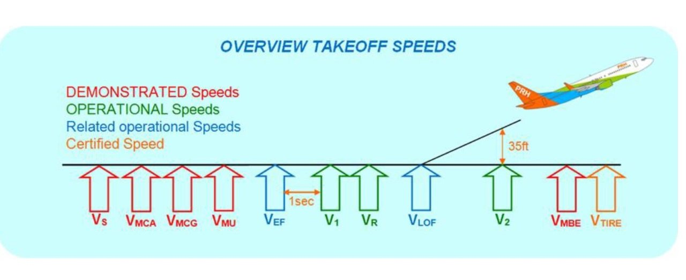

Lesson 01: Performance Framework and Take-off Speeds
Learning objectives
- Name the speeds demonstrated during certification.
- Define the operational take-off speeds V1, VR, VLOF and V2.
- Explain how weight, density, flaps, slope and wind move V1, VR and V2.

Why performance is regulated
Performance rules make sure that an engine failure at the most critical moment of a flight never leaves the crew without a safe option. Certification (EASA CS-25) demonstrates what the aeroplane can do; the operating rules (Part-CAT, CAT.POL.A) say how much margin the airline must keep on every flight. For the B737-800 the results are delivered through the company performance tool, the FCOM Performance Inflight (PI) chapter and the QRH.
Demonstrated speeds
- VS / VSR — stall speed. Certification uses the reference stall speed VSR, a calibrated airspeed not lower than the 1-g stall speed (CS 25.103).
- VMU — minimum unstick speed: the lowest speed at which the aeroplane can safely lift off and continue the take-off, at the maximum attainable angle of attack on the ground (CS 25.107).
- VMCG — minimum control speed on the ground: after a sudden failure of the critical engine, the crew keeps the lateral deviation within 30 ft of the centreline with rudder only — no nosewheel steering. Determined at maximum take-off thrust, aft CG, trimmed for take-off (CS 25.149).
- VMCA — minimum control speed in the air: straight flight with not more than 5° of bank and a heading change of 20° at most during the recovery.
- VTIRE — maximum certified tyre speed: 225 mph (195 kt ground speed) for the B737.
Crosswind and slippery runways are not taken into account when VMCG and VMCA are determined.

Operational speeds
- VEF — the speed at which the critical engine is assumed to fail; not less than VMCG.
- V1 — the maximum speed at which the first action to stop must be taken, and the minimum speed from which the take-off can be continued after a failure at VEF. One second of recognition is allowed between VEF and V1. A single V1 is used for both cases (CAT.POL.A.205). V1 ≥ VMCG and V1 ≤ VR and VMBE.
- VR — rotation speed, chosen so that a normal rotation (about 3° per second) gives V2 at 35 ft after an engine failure at VEF. VR ≥ V1 and VR ≥ 1.05 VMCA.
- VLOF — lift-off speed (≥ 1.1 VMU all engines, ≥ 1.05 VMU one engine inoperative).
- V2 — take-off safety speed at the screen height: V2 ≥ 1.13 VSR and ≥ 1.1 VMCA.
What moves the speeds
| Factor | V1 | VR | V2 |
|---|---|---|---|
| Higher weight | Higher (limited by the ability to stop) | Higher | Higher |
| Lower density (hot, high) | Higher | Higher | Lower to keep TODR within TODA; pressure altitude matters more than OAT |
| More flap | Lower | Lower | Lower |
| Downslope / tailwind | Lower (stopping is harder) | No effect | No effect |
| Upslope / headwind | Higher allowed | No effect | No effect |
In windshear or gusty crosswind conditions VR (and V2) may be increased, up to the VR for the performance-limited weight and by 20 kt at most, to improve the climb capability.
Key takeaways
- Certification demonstrates VSR, VMU, VMCG, VMCA and VTIRE.
- VMCG ≤ VEF < V1 ≤ VR; V2 ≥ 1.13 VSR and ≥ 1.1 VMCA.
- Heavier → all speeds higher; downslope and tailwind lower V1.
Knowledge check
How is VMCG demonstrated?
- With nosewheel steering and brakes
- With rudder only, keeping within 30 ft of the centreline
- On a wet runway with crosswind
- With both engines at idle
Answer: B. VMCG uses aerodynamic controls only — no nosewheel steering — and the lateral deviation must stay within 30 ft.